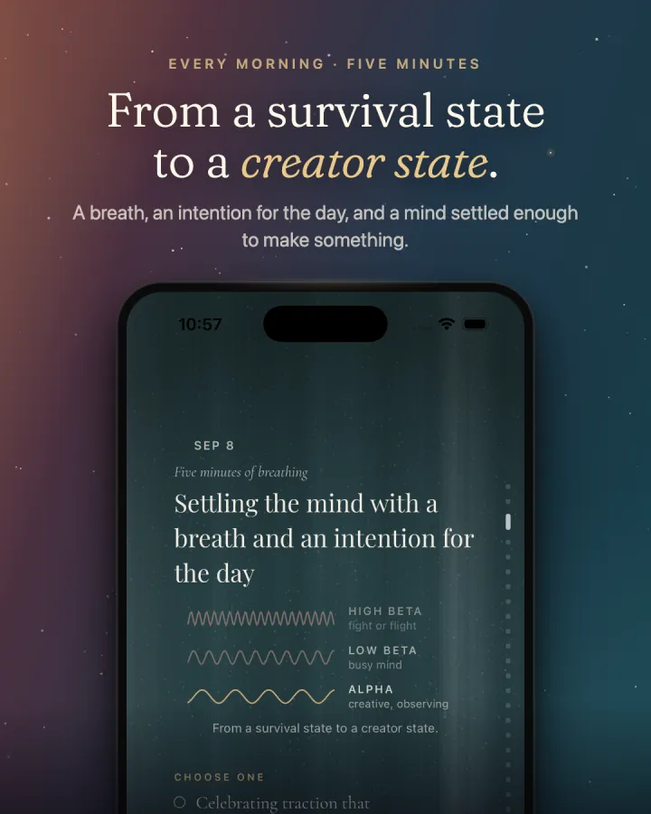
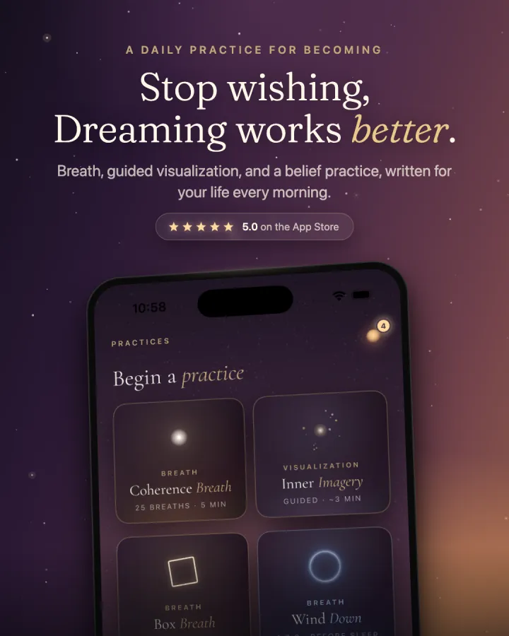

Leveraging clinically tested visualization techniques to improve performance in pursuits requiring high confidence and belief.
Visualization is a skill just like any other, and can be practiced. In Daydream you will practice basic exercises shown to improve your ability to use the mind's eye.
Coherence breathing pulls the brain out of the beta wave state into one with a lower frequency to turn off the fight/flight system and enter a state of creativity and observation.
Your meditations will use visualization to create new feelings and thoughts to trigger an emotional connection with the life and version of yourself you want to be.
Daydream is a mirror
Who you believe you are is the greatest predictor of the life you create.
Daydream is the daily practice to embody your truest self, the one who already has everything you desire.


The not so secret, secret
Your belief in who you are and what you're capable of is the greatest predictor of the life you create. This is nothing new: the same teaching runs through religious and philosophical texts across the ancient world. But over the past 15 years, modern research has used controlled studies and fMRI imaging to study these truths through observable phenomena.
Daydream guides you to bring the power of creation back to the self through breathing and visualization, building coherence between your desires and the version of you who has them.
The science, briefly
Slow, even breathing settles the brain out of high beta, the fight or flight state, into alpha. It also reduces activity in the default mode network, the circuitry that loops self-referential chatter and replays the story of who you have been. With that loop quiet, imagery turns vivid and the mind opens. Every Daydream session begins here.
The brain fires the same networks whether you do something or vividly imagine it, and vivid imagining can lay down pathway the action hasn't walked yet. Sports science has trained on this for fifty years. Daydream points it at who you're becoming.
A belief sets off thoughts and feelings, a loop that becomes your state of being. That state drives how you act; actions harden into habits; habits build your lifestyle. Most of us only ever see the bottom of the staircase. Daydream's conversations trace it back up to the source, because a belief you can see is a belief you can rewrite. And when it changes, everything downstream changes with it.
What it looks like
Every card, every story, every conversation points at the same thing: feeling like the version of you that's already becoming.
A note from the creator of Daydream
I built Daydream because every self-improvement method I tried made me feel further from the person I was trying to become. I wanted something that helps me embody the version I already know I want to be.
Not a coach, not a journal, not a meditation app. A few minutes every morning to align you with the version you are becoming.
Karthik